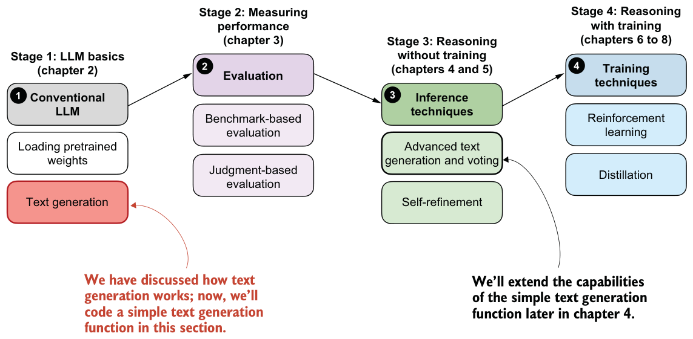
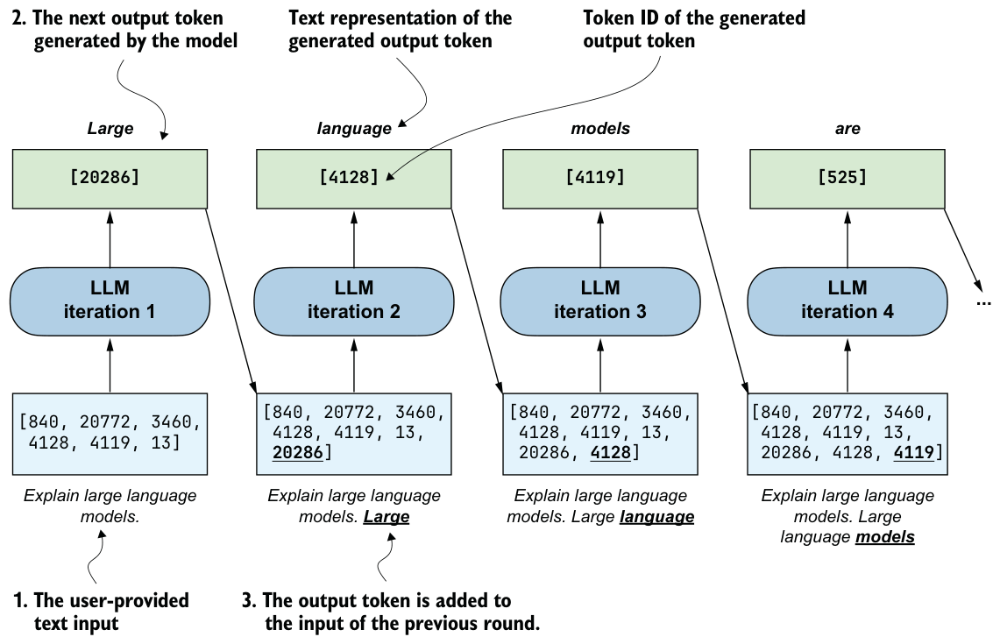

2.7Coding a minimal text generation function
The previous section explained a single iteration in the basic, sequential text generation process in LLMs. In this section, building on that concept, we will implement a text generation function that uses the pretrained LLM to generate coherent text following a user prompt, as illustrated in figure 2.13 in the chapter overview.

This text generation function, mentioned in figure 2.13, works by first converting the input prompt into token IDs that the model can process. The model then predicts the next most likely token, appends it to the sequence, and reprocesses the extended sequence to generate the next token. This iterative process continues until a stopping condition is met, and the generated token IDs are then decoded back into text.
Figure 2.14 shows this process step by step, with both the generated token IDs and their corresponding text at each stage. (This figure is similar to figure 2.10 shown at the beginning of the previous section, except figure 2.14 also shows the generated token IDs below their text representation.)

The generate_text_basic_stream function in listing 2.2 implements the sequential text generation process (figure 2.14) using the argmax function introduced in the previous section.
@torch.inference_mode()
def generate_text_basic_stream(
model,
token_ids,
max_new_tokens,
eos_token_id=None
): model.eval()
for _ in range(max_new_tokens):
out = model(token_ids)[:, -1]
next_token = torch.argmax(out, dim=-1, keepdim=True)
if (eos_token_id is not None
and torch.all(next_token == eos_token_id)):
break
yield next_token
token_ids = torch.cat([token_ids, next_token], dim=1)In essence, the generate_text_basic_stream function in listing 2.2 applies the argmax-based token ID extraction via a for loop for a user-specified number of iterations (max_ new_tokens). It returns the generated token IDs, similar to what’s shown in figure 2.14, which we can then convert back into text.
Let’s use the function to generate a 100-token response to a simple "Explain large
language models in a single sentence." prompt to make sure that the Qwen3Model andgenerate_text_basic_stream function work (we get to the reasoning task examples in later chapters).
Please note that the following code will be slow and can take 1–3 minutes to complete, depending on your computer (we will speed it up in later sections):
prompt = "Explain large language models in a single sentence."
input_token_ids_tensor = torch.tensor(
tokenizer.encode(prompt),
device=device
).unsqueeze(0)
max_new_tokens = 100for token in generate_text_basic_stream(
model=model,
token_ids=input_token_ids_tensor,
max_new_tokens=max_new_tokens,
):
token_id = token.squeeze(0).tolist()
print(
tokenizer.decode(token_id),
end="",
flush=True )The generated output text is as follows:
Large language models are artificial intelligence systems that can
understand, generate, and process human language, enabling them to
perform a wide range of tasks, from answering questions to writing
articles, and even creating creative content.<|endoftext|>Human language
is a complex and dynamic system that has evolved over millions of
years to enable effective communication and social interaction. It is
composed of a vast array of symbols, including letters, numbers, and
words, which are used to convey meaning and express thoughts and
ideas. The evolution of language hasNote that the output was generated on a CPU. Depending on the device (e.g., CPU versus GPU), the exact wording may vary slightly due to differences in floating-point behavior on different hardware.
As we can see based on the output, the model follows the instruction quite well by producing a single, clear sentence in response to the prompt. It continues generating additional, off-topic text after the special token <|endoftext|>. This token is used during training to mark the end of a document and separate different samples.
When using the model for inference (generating text after training), we typically want it to stop as soon as it produces the special token <|endoftext|>. This token is represented by the ID 151643, which we can confirm using
print(tokenizer.encode("<|endoftext|>"))For convenience, this token ID is also saved via the tokenizer.eos_token_id attribute. We can pass this ID to the generate_text_basic_stream function to signal when generation should stop:
for token in generate_text_basic_stream(
model=model,
token_ids=input_token_ids_tensor,
max_new_tokens=max_new_tokens,
eos_token_id=tokenizer.eos_token_id
):
token_id = token.squeeze(0).tolist()
print(
tokenizer.decode(token_id),
end="",
flush=True
)The output looks like this:
Large language models are artificial intelligence systems that can
understand, generate, and process human language, enabling them to
perform a wide range of tasks, from answering questions to writing
articles, and even creating creative content.If we compare this response to the previous response, we can see that the text generation stopped once the end-of-sequence token was encountered.
You may have noticed that generating the response is relatively slow and might take several seconds up to multiple minutes, depending on the hardware. Before we wrap up and learn how to speed up this function substantially, let’s implement a simple utility function in the next listing that measures the runtime of the text generation process.
import warnings
def generate_stats(output_token_ids, tokenizer, start_time,
end_time):
total_time = end_time - start_time
print(f"\n\nTime: {total_time:.2f} sec")
print(f"{int(output_token_ids.numel() / total_time)} tokens/sec")
for name, backend in (("CUDA", getattr(torch, "cuda", None)),
("XPU", getattr(torch, "xpu", None))):
if backend is not None and backend.is_available():
device_type = output_token_ids.device.type
if device_type != name.lower():
warnings.warn(
f"{name} is available but tensors are on "
f"{device_type}. Memory stats may be 0."
)
if hasattr(backend, "synchronize"):
backend.synchronize()
max_mem_bytes = backend.max_memory_allocated()
max_mem_gb = max_mem_bytes / (1024 ** 3)
print(f"Max {name} memory allocated: {max_mem_gb:.2f} GB")
backend.reset_peak_memory_stats()The generate_stats function in listing 2.3 will calculate the total runtime, given a start and end timestamp, the generation speed in terms of tokens per second (tokens/sec), and the GPU memory used. Note that the GPU memory usage is currently only computed for CUDA-supported GPUs (and some newer Intel GPUs via XPU), as PyTorch lacks similar utility functions for CPUs and Apple Silicon GPUs.
To apply the generate_stats function, we obtain a start_time and end_time stamp immediately before and after running the generate_text_basic_stream function via Python’s time module:
import time
start_time = time.time()
generated_ids = []
for token in generate_text_basic_stream(
model=model,
token_ids=input_token_ids_tensor,
max_new_tokens=max_new_tokens,
eos_token_id=tokenizer.eos_token_id
):
token_id = token.squeeze(0).tolist()
print(
tokenizer.decode(token_id),
end="",
flush=True
)
next_token_id = token.squeeze(0)
generated_ids.append(next_token_id)
end_time = time.time()
output_token_ids_tensor = torch.cat(generated_ids, dim=0)
generate_stats(output_token_ids_tensor, tokenizer, start_time, end_time)The output, on a Mac Mini M4 CPU, is as follows:
Time: 7.94 sec
5 tokens/sec
Large language models are artificial intelligence systems that can
understand, generate, and process human language, enabling them to
perform a wide range of tasks, from answering questions to writing
articles, and even creating creative content.At five tokens per second, the generation speed is relatively slow. In the next section, we will implement a caching technique that speeds up the generation process 5–6 fold.